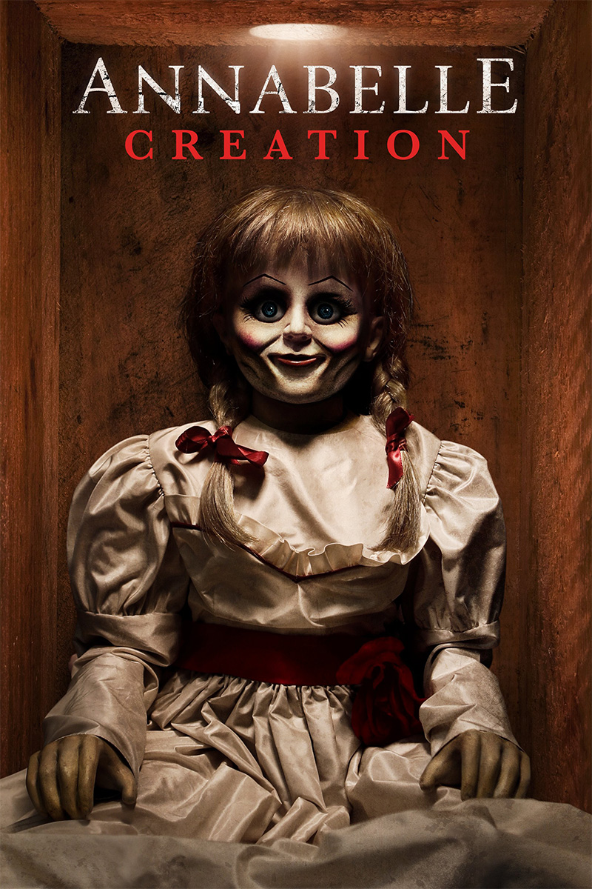

My name is Pankaj Sanjay Vishwakarma, was 20 when I got my first job in an Organization , which helped me develop leadership, communication, listening skills and technical skills. I can speak three different languages: English, Hindi, and Telugu.
Annabelle: Creation is the horror highlight of the summer - a genuinely scary, incredibly fun movie with a chilling (and confusing ending), it also boasts two post-credits scenes that tie it into a much bigger world. The Conjuring Universe just got a major expansion with the Annabelle prequel. The original spinoff was another financial success for the James Wan-masterminded horror saga but savaged by critics for its threadbare plot and empty scares. Creation ups the ante with David F. Sandberg going further into the past of the most disturbing toy this side of Chucky to deliver a cracking Friday-night horror movie that scares while tackling the effects of broken families - as well as playing wonderfully into the rest of they series.
